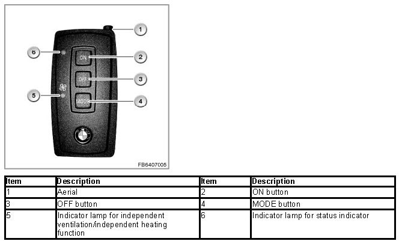
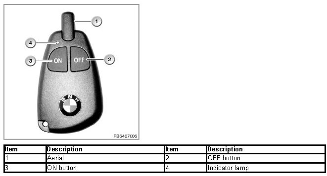

Operation of the Telestart Transmitter
Operation Of The Telestart Transmitter
Telestart transmitters up to 03/2007

Switching on/off:
1. Press button 4 until LED 5 lights up
2. Within 5 seconds, press the desired button:- To switch on: button 2 To switch off: button 3
3. LED 6 confirms switching on/off with rapid flashing
If the independent ventilation or heater is switched on with the remote control, the interior lights come on briefly as confirmation.
Due to reception, the mean range is approx. 150 m. The range is most favorable when the aerial is facing upwards and is held up. The range deteriorates when the aerial is touched or is held towards the vehicle up.
Telestart transmitter as of 03/2007 (not E65, E66)

Switching on:
1. Press button 3 until LED 4 lights up green
2. Within 3 seconds, press button 3 again.
3. LED 4 flashes green
Switching off:
1. Press button 2 until LED 4 lights up red
2. Within 2 seconds, press button 2 again.
3. LED 4 flashes red
Due to reception, the mean range is approx. 150 m. The range is most favorable when the aerial is facing upwards and is held up. The range deteriorates when the aerial is touched or is held towards the vehicle up.